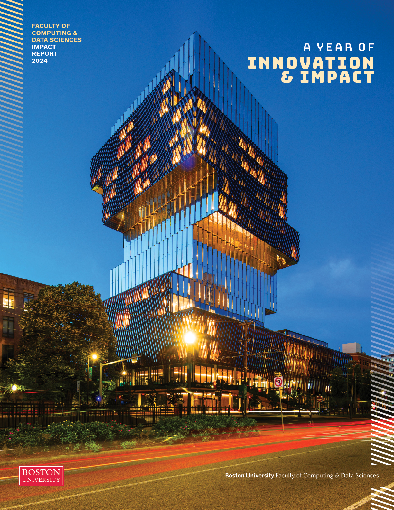

My Education |

Boston University (9/2022 - 12/2026)
B.A. in Computer Science
B.S. in Business Administration
I came to BU from Vancouver, Canada because I wanted to explore. Little did I know that it would become the best 4 years of my life. I've met so many great friends and professors here, and am excited to stay in Boston after graduation!